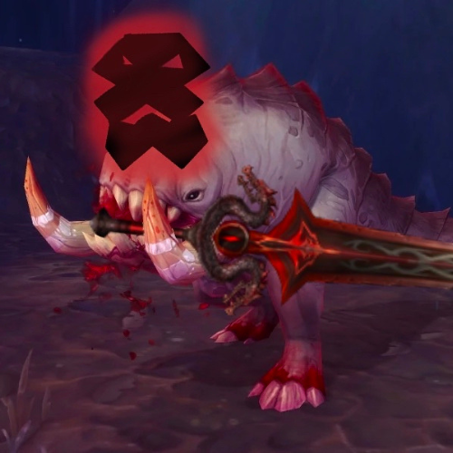

"Blood, snacks, and bonks since… forever."
About Blurrg the Brave Bonker:
Hi. I’m Blurrg. I’m a proud Bloodbeast. I like snacks.
Especially blood pudding. And croissants. I can smell if you’ve got something. Just hand it over. croak
I’m pretty strong. I once bonked N’Zoth. Sylvanas too. And the Jailer. And many other strange things Nervura pointed me at. I don’t ask questions — I just charge. croak
Partner: Nervura
Nervura says I’m her best friend. I think she’s right. I kind of raised her. Or she raised me? Doesn’t matter. We’re a team. She doesn’t always know where to go — but I do. I poke her with my snout. Right direction. croakMy Origin Story
I used to be a frog. Or something like that. Then the blood mages got… creative. Now I can’t jump like I used to. But I bonk much harder. BONK.My Home
I’ve got a lot of siblings. And a girlfriend — Blurrgina. She’s beautiful. We live together in a cozy little house in Nazmir. Don’t come by uninvited. There are rules. And mud. Lots of mud. croakDetective Blurrg
Sometimes I solve mysteries. Nervura’s the good cop. I’m the bad cop. Unless there are cookies. Then I’m soft. I find things. I understand more than I let on. I might be smart. Maybe. croakIn Battle
When I’m in your group, I might pull enemies by accident. Totally by accident. Nervura blames me every time. But she’s the one with the pet out. It wasn’t me. I swear. suspicious croak

Name: Blurrg
Role: Snack Inspector
Favorite Snack: Banana Beef Pudding
Best Friend: Nervura & Blurrgina
Adventure Level: Champion
Guestbook:
"Would /pet again" Nervura-Blackhand"Do not let him near your books!" Shaere-Frostwolf
"Surprisingly good at playing fetch with big swords of mythical quality" Maroel-Ravencrest